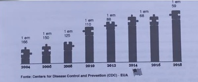

Sinais precoces de Transtorno do Espectro Autista (TEA) podem ser observados desde os primeiros meses de vida e devem ser investigados durante as consultas de puericultura. Todo contato com a criança deve ser visto como um momento interventivo, de avaliação e acompanhamento de seu desenvolvimento. Qual dos eventos abaixo NÃO pode ser considerado sinal precoce sugestivo de alteração no desenvolvimento neuropsicomotor:
Menino de 10 anos apresenta di culdades na escola, com muita di culdade na socialização, di culdades motoras, baixa tolerância à frustração, tendo bastante di culdade em entender as solicitações da professora, não interagindo bem com os colegas, com relatos de sofrer bullying por seu jeito estranho. Apresenta habilidades com números, bastante perfeccionista, apaga muitas vezes suas escritas e chora se não cam como gostaria. Em relação ao caso descrito, assinale a alternativa correta.
Após o período de isolamento em razão da pandemia por covid-19, registrou-se aumento no número de crianças e adolescentes com queixas atencionais nos consultórios pediátricos. Sabe-se que o transtorno de dé cit de atenção e hiperatividade (TDAH) é prevalente e que o diagnóstico é clínico, havendo critérios essenciais para seu correto reconhecimento. Assinale a alternativa que contempla o critério que necessariamente deverá ser identificado.
O transtorno do espectro autista (TEA) é um grupo de síndromes neuroevolutivas que se caracteriza por uma ampla gama de problemas na comunicação social e por comportamentos restritos e repetitivos. Sobre o TEA, assinalar a alternativa CORRETA:
O transtorno de dé cit de atenção/hiperatividade (TDAH) é uma condição neuropsiquiátrica que afeta préescolares, crianças, adolescentes e adultos em todo o mundo e apresenta como características uma diminuição na atenção e um padrão de impulsividade e hiperatividade aumentadas. Sobre o TDAH, assinalar a alternativa CORRETA:
Uma criança de quatro anos com de ciência intelectual e diagnóstico de síndrome de Down é avaliada por atraso de falo. Apresenta dé cit de comunicação, socialização, estereotipias motoras e hipersensibilidade aos estímulos auditivos e táteis. Qual a provável comorbidade dessa criança?
Os pais levam Miguel de 8 anos para consulta, pois a diretora da escola disse que ele é desatento e tem di culdade em aprender. A conduta inicial do médico da Atenção Primária nessa situação deve ser
A avaliação do desenvolvimento é etapa essencial na consulta pediátrica e vai muito além de conhecer os importantes marcos para cada faixa etária. O preceptor solicitou que fosse aplicado em um paciente o M-CHAT, que permite ao pediatra, a partir de um determinado escore de pontos, pensar, principalmente, na possibilidade de
Sobre a apresentação clínica de uma criança portadora de transtorno de espectro autista na infância, qual característica é provável de se encontrar?
Sobre o Transtorno do Espectro Autista, assinalar a alternativa CORRETA:
Perda de paciência frequente, postura desa adora; recusa em aceitar ordens ou solicitações de adultos, com os quais discute com frequência; tende a responsabilizar os outros pelos seus atos; frequentemente perturba os outros de forma deliberada. As características expostas são compatíveis com qual transtorno comportamental da infância?
Criança de 5 anos é levada pelos pais ao consultório, segundo o que relatam, a escola tem se queixado da criança por não acompanhar os colegas no rendimento geral e por não conversar com os amigos e professores. Conforme o médico fazia mais perguntas sobre a criança, os pais explicam que ele sempre foi ""difícil de lidar"", que se irrita muito quando tocam nele, que faz ""escândalos"" quando tentam arrumar o cabelo dele. Mas que adora brincar com dinossauros, inclusive suas primeiras palavras se relacionavam a esses animais, sabendo mais de 30 nomes diferentes. Durante a consulta toda, a criança quase não respondeu às indagações da pediatra e não tirava o olho de uma figura colada na balança. O quadro descrito tem como provável diagnóstico:
A Lei n 13.185, de 6 de novembro de 2015, instituiu o Programa de Combate à Intimidação Sistemática (Bullying) no Brasil. Na referida lei, o Bullying é definido como "todo ato de violência física ou psicológica, intencional e repetitivo que ocorre sem motivação evidente, praticado por individuo ou grupo, contra uma ou mais pessoas, com o objetivo de intimidá-la ou agredi-la, causando dor e angustia à vitima, em uma relação de desequilíbrio de poder entre as partes envolvidas (Artigo 1", inciso 1) Espaços como o ambiente i escolar são mais propícios para esse tipo de violência entre crianças e adolescentes e que podem desencadear problemas de aprendizagem e traumas psíquicos entre as vitimas e os envolvidos. Analise as afirmativas abaixo e marque a alternativa CORRETA: I. As vitimas de bullying têm di culdade de reconhecer emoções sentem mais modo a mais estresse, o que gera di culdade no aprendizado e vulnerabilidade aos transtornos de ansiedade e humor. II. Dependendo do grau de sofrimento vivido pela criança, ela poderá sentir-se ancorada a construções inconscientes de pensamentos de vingança e de suicídio, ou manifestar determinados tipos de comportamentos agressivos ou violentos, prejudicais a si mesmo e à sociedade; III. As vitimas de bullying apresentam resultados escolares piores, maiores chances de abandonar os estudos após o ensino médio, além de, durante o período escolar comum, tenderem duas vezes mais a faltar a três vezes mais a se sentirem estranhas; IV. Não é considerado como bullying atos praticados contra alunos por professores e outros pro ssionais integrantes da escola e da comunidade escolar.
O ensaio publicado em maio de 2020 pela Revista Ciência e Saúde Coletiva, da Associação Brasileira de Saúde Coletiva, intitulado "O uso intensivo da internet por crianças e adolescentes no contexto da Covid-19 e os riscos para violências autoin ingidas", traz reflexões referentes aos impactos do isolamento social imposto pela pandemia da Covid-19 e sobre o uso intensivo da internet entre crianças e adolescentes e suas possíveis consequências para a prática de violências autoin ingidas. Quanto à saúde mental de crianças e adolescentes, dentre as considerações abaixo, qual é considerada ERRADA:
Um paciente de 2 anos e 3 meses de idade foi levado ao ambulatório de pediatria pela mãe, pois ela está preocupada com um “caroço” no pescoço do lho, que ela notou há cinco meses. Relatou que o lho é bastante ativo, que se alimenta bem, sempre ganhou peso, mas fala pouco e palavras difíceis de compreender. Ademais, há muito tempo apareceram alguns machucados no couro cabeludo dele, que o menino coça bastante e tem algumas crostas. Ao exame físico, constataram- se altura = 90 cm (escore z 0), peso = 12,300 kg (escore z entre 0 e -2), FC = 120 bpm, FR = 26 irpm e SatO2 = 97% em AA. No couro cabeludo, há várias lesões com crostas melicéricas e presença de linfonodo retroauricular medindo 1,5 cm, móvel, broelástico, indolor à palpação. Observaram-se oroscopia, dentes em bom estado, sem lesões, sem frênulo lingual, otoscopia, com membrana timpânica translúcida, sem abaulamentos ou retrações e ausculta cardíaca, BNF, RR, 2t, sem sopro. Veri caram-se, ainda, ausculta pulmonar, MVUD, sem RA, abdome, RHA+, depressível, sem megalias, indolor à palpação e genitália com testículos em bolsa escrotal e mose. Com base nesse caso clínico e nos conhecimentos médicos correlatos, julgue o item a seguir. Investigação de autismo deve ser realizada em crianças que não falam aos 18 meses de idade e, entre os métodos de avaliação, está a escala M-CHAT.
Em relação ao Transtorno do Déficit de Atenção com Hiperatividade (TDAH), é correto afirmar que:
Os pais de uma criança de seis anos de idade vêm ao ambulatório com queixas de que a criança está com posturas desa adoras; recusa em aceitar ordens ou solicitações de adultos, com os quais discute com frequência; e tendendo a responsabilizar os outros pelos seus atos. Esses sintomas ocorrem em casa e em outros espaços sociais. Diante desse relato, qual a principal hipótese diagnóstica?
No ambulatório, uma criança de 30 meses de idade apresenta alterações compatíveis com Transtorno do Espectro Autista. Qual dos critérios abaixo certamente foram considerados como os mais importantes na definição da hipótese diagnóstica?
Escolar, sexo masculino, 10 anos, vem à consulta com o pediatra por di culdades de relacionamento social na família e na escola. Mostra um desempenho escolar errático com alguns bons resultados mesclados com resultados ruins. A família recebe bilhetes da escola, quase diariamente, com queixas de que o paciente atrapalha o andamento da aula com piadas, conversas ou discussões. Segundo a mãe, o lho é bastante inteligente, mas vem deteriorando o seu desempenho ao longo dos anos com piora acentuada nas últimas séries do ensino fundamental. Não consegue se concentrar nos trabalhos e termina as tarefas muito rápido, com uma qualidade baixa. Frequentemente, perde o material necessário para fazer as lições de casa. De acordo com a família, isso sempre aconteceu, mas nos últimos anos os sintomas têm cado mais significativos. Com base nessa história, o diagnóstico mais provável é:
Revisar: possível letra faltando em enunciado
Sobre transtorno de déficit de atenção/hiperatividade (TDAH), é correto afirmar:
A avaliação formal do Desenvolvimento Neuropsicomotor é fundamental e indispensável e faz parte da consulta pediátrica. O TEA (Transtorno do Espectro Autista) é causado por uma combinação de fatores genéticos e fatores ambientais. Em relação ao TEA, qual a alternativa está INCORRETA?
Assinale a alternativa correta em relação à dieta do paciente com Transtorno do Espectro Autista (TEA).
Que fármacos são considerados de primeira linha para o tratamento do Transtorno do Dé cit de Atenção e Hiperatividade?
Você atende no consultório uma criança encaminhada pelo orientador educacional de uma escola para avaliação por suspeita de autismo. São sinais e sintomas que atualmente compõem os critérios diagnósticos do Transtorno do Espectro Autista (TEA):
Das alternativas apresentadas abaixo, assinale a incorreta em relação à alimentação dos pacientes com Transtorno do Espectro Autista (TEA).
Qual das características NÃO se enquadra no Transtorno do Espectro Autista:
Em relação à conduta em crianças diagnosticadas com Transtorno de Dé cit de Atenção e Hiperatividade (TDAH), é CORRETO afirmar:
O Transtorno do Espectro Autista (T EA) ainda não tem uma etiologia devidamente esclarecida, sendo sinais de alerta observados em crianças, os descritos abaixo, EXCETO:
A escola solicitou à família de um aluno de oito anos uma avaliação médica por di culdade de aprendizagem. A criança, desde a alfabetização, apresentava di culdades na leitura e na escrita. Filho único, família nega problemas pré ou perinatais, genéticos ou médicos pregressos; teve marcos do desenvolvimento adequados. Dois tios e um primo maternos apresentaram histórico escolar semelhante. Atualmente, mesmo com reforço escolar há mais de 1 ano, permanece com leitura lenta, pausada, com esforço e di culdade para compreensão de texto, inclusive de frases simples. Copia, mas escreve apenas letras ou sílabas, com erros. Não apresenta di culdade para apredizagem de matemática, artes ou para prática de atividade física. A avaliação do comportamento adaptativo estava dentro da normalidade. Na avaliação pela escala SNAP IV: pela professora pontuou 3 para desatenção e 1 para hiperatividade; pelos pais, 2 para desatenção e 1 para hiperatividade. Baseado nos dados acima, qual o diagnóstico inicial mais provável?
Sobre o transtorno do espectro do autismo (TEA), podemos afirmar:
Sobre o transtorno de conduta, considere as seguintes afirmativas: 1. O início do quadro de transtorno de conduta na adolescência acarreta um prognóstico mais grave e com mais violência nos atos antissociais. 2. Exposição a tabaco e álcool na gestação está associada a comportamentos antissociais na prole. 3. Os dé cits em função executiva nos pacientes com transtorno de conduta são causados pela comorbidade do transtorno de déficit de atenção e hiperatividade. 4. Dificuldade na leitura e baixa performance acadêmica são comuns em jovens com transtorno de conduta. Assinale a alternativa correta.
Transtorno do Déf icit de Atenção e Hiperatividade TDAH A respeito do transtorno de déficit de atenção e hiperatividade (TDAH), considere as seguintes afirmativas: 1. Esse transtorno apresenta uma herdabilidade alta. 2. Cerca de 60% de crianças com TDAH persistem com prejuízos na idade adulta. 3. Os estimulantes são considerados medicamentos de primeira linha para o TDAH. 4. O uso de estimulante em crianças está associado à supressão do crescimento. Assinale a alternativa correta.
A respeito da descrição pelo DSM-5 do transtorno de déficit de atenção e hiperatividade, é correto afirmar:
Em relação a características epidemiológicas do transtorno do espectro autista, é correto afirmar:
Um jovem de 18 anos de idade, depois de começar a trabalhar em uma agência de viagens, procura atendimento psiquiátrico por aconselhamento da gerente que observou suas di culdades em completar uma tarefa, seguir uma instrução e escutar quando alguém está falando com ele. Tem impulsividade e agitação. É desorganizado, distraído e demonstra muitas di culdades escolares desde a infância, pois é difícil para ele conseguir se concentrar. Há quatro anos, usa álcool e maconha diariamente, várias vezes ao dia, inclusive no horário do trabalho. Sente-se também muito triste, com baixa autoestima, desesperançoso e com vontade de morrer. Para ele, parece que nunca vai conseguir ser feliz. Sua família sempre considerou que ele era “malcriado” e “preguiçoso”, por isso nunca procurou atendimento médico para ele. Com base nesse caso clínico e nos conhecimentos médicos correlatos, julgue os itens a seguir. A grande diversidade de sinais e sintomas de transtorno do espectro autista (TEA) re ete a multiplicidade de anormalidades observadas em estudos patológicos e funcionais e inclui regiões do prosencéfalo e do romboencéfalo.
Transtorno do Déf icit de Atenção e Hiperatividade TDAH Um jovem de 18 anos de idade, depois de começar a trabalhar em uma agência de viagens, procura atendimento psiquiátrico por aconselhamento da gerente que observou suas di culdades em completar uma tarefa, seguir uma instrução e escutar quando alguém está falando com ele. Tem impulsividade e agitação. É desorganizado, distraído e demonstra muitas di culdades escolares desde a infância, pois é difícil para ele conseguir se concentrar. Há quatro anos, usa álcool e maconha diariamente, várias vezes ao dia, inclusive no horário do trabalho. Sente-se também muito triste, com baixa autoestima, desesperançoso e com vontade de morrer. Para ele, parece que nunca vai conseguir ser feliz. Sua família sempre considerou que ele era “malcriado” e “preguiçoso”, por isso nunca procurou atendimento médico para ele. Com base nesse caso clínico e nos conhecimentos médicos correlatos, julgue os itens a seguir. TDAH e transtorno do espectro autista podem ser diagnosticados concomitantemente.
Um jovem de 18 anos de idade, depois de começar a trabalhar em uma agência de viagens, procura atendimento psiquiátrico por aconselhamento da gerente que observou suas di culdades em completar uma tarefa, seguir uma instrução e escutar quando alguém está falando com ele. Tem impulsividade e agitação. É desorganizado, distraído e demonstra muitas di culdades escolares desde a infância, pois é difícil para ele conseguir se concentrar. Há quatro anos, usa álcool e maconha diariamente, várias vezes ao dia, inclusive no horário do trabalho. Sente-se também muito triste, com baixa autoestima, desesperançoso e com vontade de morrer. Para ele, parece que nunca vai conseguir ser feliz. Sua família sempre considerou que ele era “malcriado” e “preguiçoso”, por isso nunca procurou atendimento médico para ele. Com base nesse caso clínico e nos conhecimentos médicos correlatos, julgue os itens a seguir. Deve ser solicitado, como exame complementar, o eletroencefalograma (EEG), pois o transtorno do de cit de atenção com hiperatividade (TDAH) possui, como marcador biológico, o aumento de ondas lentas.
Um jovem de 18 anos de idade, depois de começar a trabalhar em uma agência de viagens, procura atendimento psiquiátrico por aconselhamento da gerente que observou suas di culdades em completar uma tarefa, seguir uma instrução e escutar quando alguém está falando com ele. Tem impulsividade e agitação. É desorganizado, distraído e demonstra muitas di culdades escolares desde a infância, pois é difícil para ele conseguir se concentrar. Há quatro anos, usa álcool e maconha diariamente, várias vezes ao dia, inclusive no horário do trabalho. Sente-se também muito triste, com baixa autoestima, desesperançoso e com vontade de morrer. Para ele, parece que nunca vai conseguir ser feliz. Sua família sempre considerou que ele era “malcriado” e “preguiçoso”, por isso nunca procurou atendimento médico para ele. Com base nesse caso clínico e nos conhecimentos médicos correlatos, julgue os itens a seguir. Para esse paciente, indica-se a prescrição de metilfenidato de liberação imediata às 8 h, às 12 h, às 16 h e às 22 h.
Menino de 1 ano e 10 meses é levado à consulta ambulatorial pelos responsáveis. Estes se queixam de que ele apresenta comportamento estranho. Os responsáveis relatam que o lho parece não se importar com eles, que seu comportamento é aéreo, não sorri, nem faz contato visual; quando chamado pelo nome não responde, apesar de parecer ser sensível a sons altos. Segundo eles, o menino não se interessa por outras crianças, nem demonstra suas vontades, apontando para objetos ou verbalizando seus desejos. Devido à suspeita de dé cit auditivo, foi realizada uma audiometria infantil comportamental, que teve resultado normal. Na avaliação do desenvolvimento, houve atraso nos eixos pessoal-social e linguagem pela escala de Denver-II e escore de 10 pontos pela escala M-CHAT-R/F. Em relação ao caso, o diagnóstico mais provável e a conduta adequada, respectivamente, são:
O diagnóstico precoce de transtorno do espectro autista é importante para intervenção precoce e melhor desenvolvimento da criança. Assinale a alternativa que NÃO é característica ou sinais de alerta para a doença:
Sobre o Transtorno do Espectro Autista, assinale a alternativa correta.
Indivíduos com esse Transtorno não apresentam retardo linguístico, retardo cognitivo clinicamente significativo ou deficiências adaptativas. Essa descrição se refere a qual dos Transtornos descritos a seguir:
Considerando o DSM-5, assinale a alternativa correta.
Nas avaliações clínicas do Déficit Intelectual, é
Leia o texto a seguir. Nossos adolescentes atuais parecem amar o luxo. Têm maus modos e desprezam autoridade. São desrespeitosos com os adultos e passam o tempo vagando nas praças… São propensos a ofender seus pais, monopolizam a conversa quando estão em companhia de pessoas mais velhas; comem com voracidade e tiranizam seus mestres. SÓCRATES, lósofo do século V a.C. In: OUTEIRAL, J. Adolescer - Estudos revisados sobre adolescência. 2.ed. Rio de Janeiro: Revinter, 2003. Essa descrição do comportamento dos adolescentes na idade antiga parece ser muito atual. As grandes transformações dessa faixa etária levam a uma crise normativa na busca da própria identidade e autonomia. A crise normal da adolescência, antes denominada síndrome, descrita por Aberastury e Knobel, elenca comportamentos e atitudes emocionais dos adolescentes. Entre esses comportamentos da crise normal da adolescência está
Os sintomas característicos do transtorno do espectro autista (TEA) são o desenvolvimento aberrante da comunicação social e o comprometimento da capacidade de se envolver em interações sociais recíprocas. Sobre o TEA assinale a alternativa correta.
Um adolescente de 14 anos é trazido à consulta e seus pais queixam-se de que ele mudou completamente o modo de relacionar-se em casa. Não aceita mais os padrões vigentes na família, não mantém mais suas coisas arrumadas e passa muitas horas ouvindo música com o som excessivamente alto. Na escola, o padrão de comportamento de Pedro é normal, não havendo qualquer queixa dos professores. É um aluno bastante responsável com suas obrigações escolares. Ao orientar a família, qual a explicação que o médico deve fornecer à família sobre o comportamento do filho?
Menino de 8 anos é trazido à consulta pelos pais. Ambos referem que o lho está “sempre agitado”, que é incapaz de brincar calmamente, que com frequência fala demais e interrompe os outros, apresentando muita di culdade em esperar a sua vez (por exemplo, em uma la). Além disso, evita ou reluta em se envolver em atividades que exijam esforço mental, é bastante desorganizado nas suas tarefas diárias e repetidamente perde coisas (seu material escolar, seus óculos, entre outros). O menino confirma as informações trazidas pelos pais. Em função dessa sintomatologia, você realiza o diagnóstico de Transtorno de Dé cit de Atenção/Hiperatividade (TDAH) subtipo combinado e indica tratamento psicoterápico e farmacológico. Sobre o tratamento farmacológico do TDAH em crianças, é correto afirmar que:
Adolescente de 12 anos, apresenta dificuldade escolar, difícil conseguir que faça a lição de casa, tem "crises nervosas" e "faz birra". O que ele mais gosta de fazer é jogar vídeo game. Os pais também observaram que ele pode ser muito distraído. Além disso, embora goste de ajudar o pai nos trabalhos com máquinas, ele frequentemente esquece as ferramentas que é solicitado a buscar. O exame do estado mental, revelou ansiedade relativamente alta, o paciente estava orientado no tempo e espaço, tinha pensamentos coerentes e afeto congruente. A memória, de curto e longo prazo, também estava preservada. Nenhuma alucinação, delírio ou comportamento violento foram relatados. Ele não relatou pensamentos de autoagressão, não tem história de trauma na cabeça nem apresenta patologias importantes. Os exames laboratoriais e o exame físico de rotina não mostraram alterações, e revelaram que ele não tem problemas de audição ou visão, começou a falar e a andar cedo. Ele admite que se sente "burro" na escola e que desconta suas frustrações em crianças que considera inteligentes, sabotando o aprendizado. Com base na anamnese e na avaliação do paciente, qual é o diagnóstico mais provável?
Paciente de 7 anos comparece à pediatra com um relato da escola que a descreve como “aluna muito desorganizda, desatenta, que se distrai facilmente e perde objetos necessários para a realização de tarefas frequentemente”. Com essas informações, considera-se a possibilidade de transtorno do dé cit de atenção e hiperatividade (TDAH). Caso o diagnóstico de TDAH seja confirmado, o tratamento medicamentoso de primeira linha é feito com estimulantes. No Brasil, o mais utilizado é o metilfenidato que:
Na consulta de puericultura de um paciente de 3 anos e 6 meses, a mãe relata que o lho não olha nos olhos das pessoas, não consegue brincar com outras crianças e passa muitas hora agitando as mãos. Diante desse relato, o pediatra considera a possibilidade de transtorno do espectro autista. Para corroborar essa hipótese, o médico deve buscar informações sobre o(a):
Sobre o Transtorno de Déficit de Atenção e Hiperatividade (TDAH), assinale a alternativa correta.
Com relação ao transtorno do espectro autista (TEA), sabemos que deve ser diagnosticado o mais breve possível, pois intervenções precoces podem atenuar os sintomas. Das seguintes alternativas qual faz você pensar em TEA?
Em relação ao desenvolvimento da linguagem, em crianças com síndrome de Asperger, pode-se afirmar que:
Criança de 6 anos é levada à consulta ambulatorial com queixa de baixo rendimento escolar e mudança recente de comportamento. Os relatórios escolares dos anos anteriores registram um garoto tímido, de poucos amigos, contudo, com bom relacionamento com todos na classe. As observações no período pré-escolar relatam di culdade na elaboração de rimas e na pronúncia de palavras, em especial aquelas com sons semelhantes (exemplo: faca/vaca), e di culdade de soletração. Nesse momento de fase escolar, apresenta leitura lenta, com muitos erros, além de vários erros de escrita. Frequentemente, o próprio paciente não entende o que escreveu. Há relato de aumento da agressividade com seus amigos de turma e professores, em especial no ano vigente, em que está sendo alfabetizado. Sobre o aprendizado, refere-se que o paciente “aprende melhor ouvindo do que escrevendo”. Ao exame, apresenta-se um pouco retraído ao início da consulta, cando descontraído com o passar do tempo, respondendo às perguntas que lhe são feitas e demonstrando bom grau de raciocínio lógico e abstrato. O diagnóstico mais provável e a terapêutica indicada para o transtorno apresentado, respectivamente, são:
Pré-escolar de 3 anos, previamente hígido, inicia comportamento repetitivo, com balanceio do corpo, preferência por isolamento e, por vezes, se joga ao chão. Os pais relatam início de crises frequentes de agressividade, com regressão na expressão verbal. Rastreio infeccioso negativo. Exame neurológico normal. Avaliação audiométrica e exames de imagens sem alterações. A hipótese diagnóstica inicial e a conduta adequada são, respectivamente:
Um motorista, 35 anos de idade, procura auxílio psiquiátrico devido a sua di culdade em lidar com a raiva. Conta que, em várias situações, ca agressivo verbalmente com passageiros e colegas de trabalho, já perdeu várias namoradas por ter sido excessivamente grosseiro durante discussões e em uma ocasião cou tão descontrolado que bateu seu carro propositalmente após levar uma “fechada”. Tais episódios ocorreram na ausência de eventos estressores evidentes ou graves e, apesar de haver histórico de uso abusivo de álcool, os rompantes agressivos acontecem em períodos de sobriedade. Entre os episódios de raiva, é uma pessoa calma, gentil e amável com seus pares. Tem muitos amigos e uma vida social ativa. Arrepende-se amargamente após os episódios de descontrole, que duram alguns minutos. Quanto ao provável diagnóstico, assinale a alternativa correta.
Um novo relatório do Centro de Controle e Prevenção de Doenças (CDC) de 2018, dos Estados Unidos, mostrou um aumento de 15% no número de crianças com determinada doença neurológica, em relação aos dois anos anteriores. Isso significa 1 caso para cada 59 crianças. À qual doença o texto se refere?

Criança do sexo masculino, com dois anos e meio de idade, é levada para consulta na UBS com queixa de comportamento agitado e irritabilidade. Trata-se do terceiro lho do casal, mãe com 43 anos e pai com 50 anos. Os pais relatam que no primeiro ano de vida era um bebê tranquilo e gostava de dormir sozinho. No segundo ano de vida, os pais começaram a se preocupar com ataques de agitação e choro incontrolável em situações de frustração ou com barulho intenso (festas, trovões). Acham que fala menos que os irmãos na mesma idade e não diz frases. Descon am que ele possa ter algum problema de audição pois não responde quando chamam seu nome e não presta atenção quando conversam com ele. Algumas pessoas dizem que ele é uma criança triste pois não gosta de brincar com outras crianças e ca irritado ao sugerirem que compartilhe seus brinquedos. Neste momento, a conduta MAIS ADEQUADA é:
Revisar: possível letra faltando em enunciado
Sobre os critérios diagnósticos para distúrbio autista, marque a alternativa incorreta:
Uma mãe chega à consulta médica com a seguinte queixa em relação à sua lha: “Ela me mostrou este desenho e eu sabia que significava triste, que é como eu me senti quando encontrei o cachorro morto. Então ela me mostrou este desenho e eu sabia que significava feliz, que é como eu co quando estou lendo sobre as missões espaciais Apollo. Então ela desenhou outras caras, mas eu não consegui saber o que elas significavam.” Sobre o Transtorno do Espectro Autístico (TEA) MARQUE A CORRETA:
Revisar: possível letra faltando em enunciado
Uma paciente de 12 anos de idade vai a consulta agendada em Unidade de Saúde da Família acompanhada pela mãe. A familiar demonstra preocupações quanto ao desenvolvimento da lha, alegando ser esta uma das mais baixas entre as respectivas colegas e que ainda não teve a primeira menstruação, a despeito de estar notando desenvolvimento das mamas há 10 meses, observando-se a presença de broto mamário ao exame físico. Refere-se, também, que a mãe está receosa de a lha vir a ser diagnosticada com síndrome dos ovários policísticos (SOP), tendo base tal preocupação em leitura de informações da internet em correlação com o fato de a lha apresentar acne facial, de ainda nunca ter menstruado e de possuir histórico familiar de primeiro grau de obesidade e diabetes mellitus tipo 2. Faz uso de metilfenidato 10 mg/dia por diagnóstico prévio de transtorno de de cit de atenção e hiperatividade, demonstrando manter atenção apenas para atividades do próprio interesse, sem, no entanto, apresentar histórico de baixo desempenho escolar ou prejuízo da vida social. Em avaliação ponderoestatural, verifica-se IMC de 21 kg/m², considerado adequado para a idade da paciente. Com base nesse caso clínico e nos conhecimentos médicos correlatos, julgue o item a seguir. O diagnóstico de transtorno de de cit de atenção e hiperatividade é clínico, levando-se em conta a exigência de que deve haver clara evidência de que os sintomas interferem na qualidade do funcionamento social, acadêmico ou ocupacional ou reduzem-na, tornando questionável o diagnóstico prévio da paciente do caso clínico.
Menino de 4 anos é trazido ao Ambulatório de Pediatria encaminhado pela escola para avaliação em relação ao desenvolvimento. A família observa alterações desde 18 meses de idade, como linguagem muito pobre, não atender quando chamado e di culdades na socialização. O pediatra levanta a possibilidade de Transtorno do Espectro Autístico. O que o pediatra levantou na anamnese que caracteriza essa condição?
Criança de 3 anos, vem para consulta devido a atraso do desenvolvimento caracterizado por dé cit de interação social, atraso na fala e alteração de comportamento com estereotipias e hábitos repetitivos. Mãe relata que desde os 18 meses percebia estas alterações. Diante do caso descrito, assinale a PRIORIDADE a ser adotada.
Determinada mulher leva o respectivo lho de 2 anos de idade para consulta ao pediatra. Queixa-se de que acha seu lho diferente das outras crianças, dizendo que ele tem um comportamento estranho. A criança apresenta grande di culdade para se alimentar, sendo bastante seletivo. Tem comportamento muitas vezes agitado e ainda não fala. Com base na avaliação clínica feita pelo pediatra, suspeita-se de transtorno do espectro autista. Tendo em vista o caso clínico descrito, assinale a alternativa correspondente aos sinais clínicos que podem, em conjunto, estar relacionados a esse diagnóstico.
Acerca das patologias na infância, julgue o item a seguir. Entre os problemas psiquiátricos na infância e na adolescência, predominam os transtornos de comportamento disruptivo, de difícil diagnóstico, e os transtornos emocionais, que, caso não tratados, progridem necessariamente na fase adulta.
Criança de dois anos e meio de idade, que já falava adequadamente, vem apresentando gagueira há um mês. A mãe, bastante ansiosa, leva a criança ao pediatra com esta queixa. Considerando o diagnóstico, a conduta mais adequada é:
Escola particular convoca os pais de menino de 6 anos, pois o mesmo vem apresentando nas atividades escolares comportamento frequentemente irritadiço quando contrariado, agressivo com os colegas e com di culdades em acatar ordens dos professores. Assistente social relata que foi observado durante atividade ao ar livre a criança colocando fogo em gato e quando confrontado sobre ser errado este tipo de ação não demonstrou nenhum tipo de arrependimento. Qual o diagnóstico correto para o caso relatado acima?
Menino, 9 anos, é levado à consulta com o pediatra por problemas comportamentais na escola e em casa; não consegue prestar atenção em aula e ao fazer os temas, está sempre conversando na aula, não consegue car sentado, não termina tarefas, "atropela" outras crianças nas brincadeiras, está sempre perdendo seus pertences e parece não ouvir instruções, que precisam ser repetidas várias vezes pela professora e pela mãe. Apesar de ter um QI de 115, apresenta prejuízos no desempenho escolar. Com base nessa história, qual é o tratamento farmacológico de primeira escolha?
Em alguns projetos de estudo sobre o aprendizado infantil, as crianças que recebem intervenção educacional, apresentam uma ampla vantagem em relação a grupos de controle nos escores de teste de desenvolvimento entre 12 e 18 meses. Aos 3 anos, o teste de QI do grupo experimental foi superior quando comparado ao grupo controle. Essas descobertas mostram que uma intervenção educacional precoce ajuda a compensar riscos ambientais e proporciona benefício significativos na aprendizagem. As interveções antecipadas mais efetivas são aquelas que:
Criança de 10 anos do sexo masculino apresenta di culdade de interação social, não aponta para mostrar interesse em algum brinquedo, pouco comunicativo, preocupação excessiva com partes de objetos. Qual a hipótese diagnóstica mais provável?
Sobre o autismo podemos afirmar, exceto:
Escolar de 8 anos apresenta-se com queixa de mal desempenho escolar. Pais relatam que comete erros por descuido em atividades escolares, tem di culdade de manter a atenção nas tarefas ou atividades lúdicas, parece não ouvir quando lhe dirigem a palavra, tem di culdade de organizar tarefas e atividade, é facilmente distraído por estímulos externos, tem di culdade de brincar ou se envolver silenciosamente em atividades de lazer, fala em demasia tanto em casa como na escola. I - Ele necessita de avaliação psicopedagógica e complementação com EEG. PORQUE: II - Nesta situação há alta prevalência de comorbidades com outros transtornos psiquiátricos.
O Autismo, desde 1943, desde quando descrito por Kaner como autismo extremo, obessividade (tendência à mesmice, ou sameness), esterotipias e ecolalia, sofreu alterações conceituais passando de um Distúrbio Autístico do Contato Afetivo relacionado a fenômenos psicóticos para uma concepção como distúrbios do desenvolvimento relacionando-se como uma síndrome comportamental com dé cits cognitivos (retardo mental). O novo modo de ver o Autismo é biológico, portanto sendo descrito como uma síndrome comportamental, com etiologia orgânica e curso de um transtorno do desenvolvimento. Desse modo, os critérios diagnósticos do Autismo são:
Em relação ao Transtorno do Espectro Autista (TEA), analise as a rmativas. I - O TEA é caracterizado por dé cits e di culdades na comunicação e interação social, associados a interesses e atividades restritas e circunscritas, cujas características clínicas e sintomatológicas se iniciam nos primeiros anos da infância. II - O lactente pode demonstrar sinais de autismo desde os primeiros meses de vida e cabe ao pediatra inserir investigação nas consultas de puericultura. III - Por se tratar de um instrumento de triagem e não de diagnóstico, nem todas as crianças que pontuam na Escala Modi ed Checklist for Autism in Toddlers (M-CHAT) serão diagnosticadas com Transtorno do Espectro Autista. Está correto o que se afirma em:
Ana Luiza, 5 anos, chega ao consultório do pediatra a pedido da professora da escola onde estuda, com quadro de problemas na escola, em especial, com a sua professora. A criança perde a paciência com muita frequência, discute com adultos com facilidade, culpa os outros pelos seus erros, de forma proposital incomoda outras crianças a seu redor, além de demonstrar ira, ressentimento, sentimento de vingança e rancor em muitos momentos. Os pais relatam o mesmo comportamento em casa e fora da escola. A professora e os pais apresentam hematomas em região de membros inferiores, devido às agressões constantes da criança. A mãe relata que teve gravidez sem intercorrências e o parto transcorreu sem problemas, porém admite ter feito uso de tabaco durante a gravidez. Relata que a lha sempre foi assim, imatura, parecia não aprender com as experiências, envolve-se com brincadeiras perigosas. O pai relata que a criança é lábil emocionalmente, não tolera as frustrações. Seu pai é usuário de substâncias ilícitas. Ao exame psíquico, mostra-se bem apresentada, consciente, agressiva, orientada, impaciente, atenção espontânea aumentada e voluntária diminuída, memória preservada, inteligência dentro do esperado, sem alterações da sensopercepção, psicomotricidade aumentada e crítica diminuída. De acordo com este quadro clínico, a hipótese mais provável é:
A de ciência intelectual (DI), anteriormente chamada retardo mental, tem múltiplas etiologias e cursa com distúrbio do neurodesenvolvimento. Sobre a DI, assinale a alternativa correta.
Sobre o Autismo Infantil (Transtorno do Espectro Autista) é incorreto afirmar que:
A detecção precoce do autismo é fundamental para a imediata intervenção. Até o momento, inexistem exames laboratoriais ou marcadores biológicos para a identi cação do autismo, a qual se dá pela avaliação do quadro clínico e pela observação do comportamento. O autismo aparece, tipicamente, antes dos 3 anos de idade e caracteriza-se por desvios qualitativos na comunicação, na interação social e no uso da imaginação. Em relação ao diagnóstico de suspeição de autismo marque a alternativa correta:
Os sintomas do Transtorno do Dé cit de Atenção e Hiperatividade (TDAH), segundo os critérios do DSM-V, persistirão por mais de 6 meses, causando prejuízo em pelo menos dois ambientes diferentes, não havendo outra patologia que explique melhor o quadro clínico. Isso ocorre antes de qual idade?
Pré-escolar de 3 anos, sexo masculino, é levado para consulta pediátrica pois sua genitora observou que ele tem apresentado desordem no desenvolvimento da linguagem, di culdade nas relações sociais reciprocas, limitação na capacidade de desenvolver brincadeiras funcionais simbólicas ou de faz de conta e necessidade obsessiva de uniformidade e resistência a mudanças. A principal hipótese diagnóstica é:
João, 4 anos, foi encaminhado pela escola ao médico da Unidade Básica de Saúde. A escola está preocupada pelo fato da criança apresentar di culdades de se comunicar e de fazer amigos e de ser agressivo quando contrariado. Os pais referem que ele é muito agitado e parece não se concentrar, mas é muito inteligente e que sabe contar e ler os números desde os 2 anos de idade. Na consulta o pediatra observou que João tinha di culdade de car parado, fez o maior escândalo para ser examinado e que os pais não conseguiam colocar limites. Não se interessou por nenhum brinquedo da sala, mas adorava abrir e fechar a porta, o que fez diversas vezes. A hipótese diagnóstica mais provável é:
Sobre o Atraso Global do Desenvolvimento, assinale a alternativa correta:
Considerando os transtornos do desenvolvimento infantil, dentre eles o Transtorno do Espectro Autista, podemos considerar as afirmativas abaixo como verdadeiras, EXCETO:
Adolescente, feminino, 11 anos, vem encaminhada por di culdade escolar. Atualmente cursa o 6° ano do ensino fundamental em uma instituição pública de ensino. Os professores relatam frequentemente que a adolescente tem di culdades de manter o foco durante as aulas e de iniciar as tarefas propostas, evitando se envolver em atividades que exijam maior esforço mental. A gestação e o período neonatal ocorreram sem intercorrências. Desenvolvimento neuropsicomotor adequado. Mãe informa que a adolescente teve di culdades no processo de alfabetização, sempre perde materiais escolares e esquece de realizar os deveres. A hipótese diagnóstica e a conduta indicada são:
Em relação ao transtorno do espectro autista, afirma-se: I - A prevalência é maior em meninas; II - É caracterizado por déficits na comunicação e na interação social; III - O diagnóstico diferencial inclui surdez congênita ou distúrbio auditivo grave. Está/Estão correta(s) a(s) afirmativa(s)
Escolar, masculino, cinco anos, com transtorno de dé cit de atenção e hiperatividade, apresenta, nos últimos 12 meses, comportamento irritável diário, cando facilmente bravo, com descontrole de temperamento e crises de birra, recusando- se a cumprir as atividades propostas pelo professora na escola e implicando com os outros alunos da classe a ponto de estar sendo isolado pelos colegas. Sempre coloca a culpa de seu mau comportamento em outro colega. Apesar de car ressentido com frequência, não possui comportamento agressivo com seus pares, nem destrutivo com os materiais escolares. A hipótese diagnóstica mais provável é de transtorno:
Escolha a alternativa mais apropriada sobre Transtorno de Déficit de Atenção/Hiperatividade:
Crianças de 2 anos é trazida ao atendimento de puericultura com a queixa de atraso na fala. Fez o teste da orelhinha ao nascer e repetiu com 1 ano de idade tendo resultado normal nas duas ocasiões. O menino fala poucas palavras de difícil compreensão, não frequenta escola tendo pouco contato com crianças, tem bruxismo acentuado e seu brinquedo predileto é o iPad da mãe. No exame físico seu crescimento está adequado porém apresenta-se muito irritado ao exame e não estabelece contato com o examinador sendo difícil avaliar o seu desenvolvimento. A sua hipótese diagnóstica é:
Pedro tem 6 anos e está cursando a primeira série do ensino fundamental. Foi encaminhado para avaliação do psiquiatra por indicação do professor. O maior problema referido é um comportamento explosivo. O garoto se recusa a obedecer ao professor, fala aos gritos e perde o controle quando contrariado. Pedro é causa de transtorno em sala de aula por ser excessivamente agitado e ruidoso, o que o leva ao con ito com o professor. Com relação ao quadro clínico do TDAH, marque V (verdadeiro) ou F (falso). ( ) As manifestações são mais centradas na desatenção, afetando negativamente as relações da criança e o ambiente familiar. ( ) São sintomas associados a brigas com outras crianças, acidentes e uma di culdade de manejo da agitação por parte de pais e cuidadores. ( ) A criança hiperativa é mais facilmente encaminhada e diagnosticada quando apresenta também comportamento agressivo e desafiante. ( ) A psicoeducação para o TDAH deve ser primeira abordagem realizada após a comunicação do diagnóstico.
Sobre o TDAH (transtorno de déficit de atenção / hiperatividade): I. Acomete mais meninos que meninas em uma proporção de 2,4:1 até 6:1.; II. Os sintomas são persistentes e surgem nos primeiros 12 anos de idade.; III. Caracteriza-se sempre pela presença de desatenção e/ou impulsividade / hiperatividade. Quais afirmações estão corretas?
Sobre o Transtorno de Aprendizagem, assinale a alternativa CORRETA:
O Departamento de Pediatria do Desenvolvimento e Comportamento da Sociedade Brasileira de Pediatria recomenda aos pediatras e pro ssionais de saúde que trabalham com crianças da primeira infância, o instrumento de triagem de indicadores do Transtorno do Espectro Autista (TEA) chamado Modi ed Checklist for Autism in Toddlers (M-CHAT). Qual o intervalo de idade recomendado pela Academia Americana de Pediatria para aplicação do teste e quem deve respondê-lo:
São características do Transtorno do Déficit de Atenção, EXCETO:
No ambulatório, os pais de uma criança de 3 anos de idade trazem preocupações do tipo "nosso lho parece não estar se desenvolvendo bem". Após dois encontros com a família e a criança, o médico formula a hipótese de Transtorno do Espectro Autista. Da extensa avaliação realizada, qual dos critérios diagnósticos abaixo são coerentes com a suspeita clínica do médico?
Um adolescente de 13 anos é levado ao consultório médico pelos pais, que a rmam estarem preocupados e "desorientados", pois o rapaz, antes sensato e obediente, agora está rebelde, ouvindo apenas as opiniões dos amigos. Às vezes está alegre e brincalhão, outras, tranca-se no quarto, triste e calado. Em casa, é mal educado e preguiçoso. Em contrapartida, é gentil e prestativo com os vizinhos. Qual o possível diagnóstico?
Pré-escolar de três anos, sexo masculino, é levado a consulta de rotina por seus pais, preocupados porque o menino fala poucas palavras. Relatam que é muito quieto, não tem amigos, não obedece às ordens e não é muito carinhoso, evitando contatos físicos e visuais. Nascido de parto prematuro, 32 semanas, permaneceu internado em UTI neonatal por seis semanas, devido a sepse tardia, sem necessidade de ventilação mecânica. Exame físico: normal. A hipótese diagnóstica mais provável é:
Com relação aos transtornos no espectro do autismo (TEA), é ERRADO afirmar que:
Todas as alternativas abaixo fazem parte da síndrome do adolescente normal, EXCETO a/as:
Um menino de 11 anos é encaminhado para consulta médica pela escola por apresentar indisciplina no ambiente escolar. Os professores relatam que o aprendizado está prejudicado. Acreditam que o menor não aprende devido à inquietação motora, ao excesso de “conversas paralelas” e à “ansiedade”. Sua professora de matemática também se queixa que o garoto parece não ouvir quando chamado e frequentemente parece estar “no mundo da lua”. Esses comportamentos se repetem em casa e na vida social do menor, o que deixa seus pais preocupados. Diante desse cenário, qual é a principal hipótese diagnóstica e indicação terapêutica? Respostas: 1 12 23 34 45 56 67 78 89 100